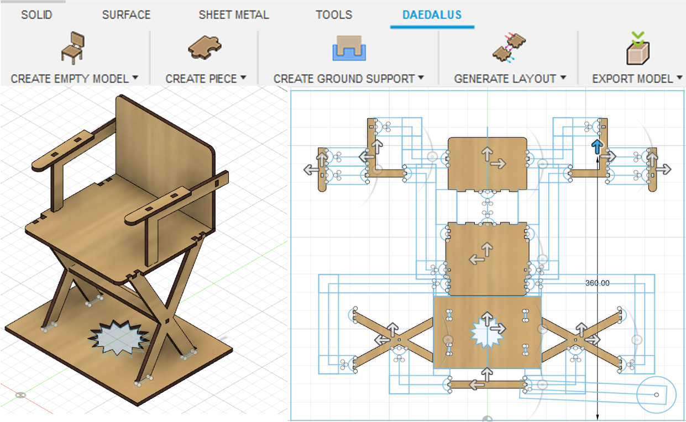
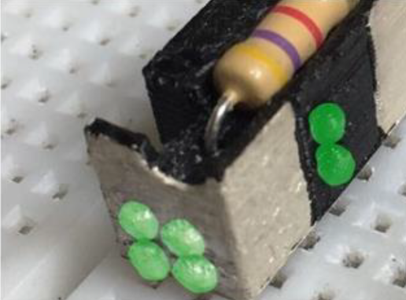
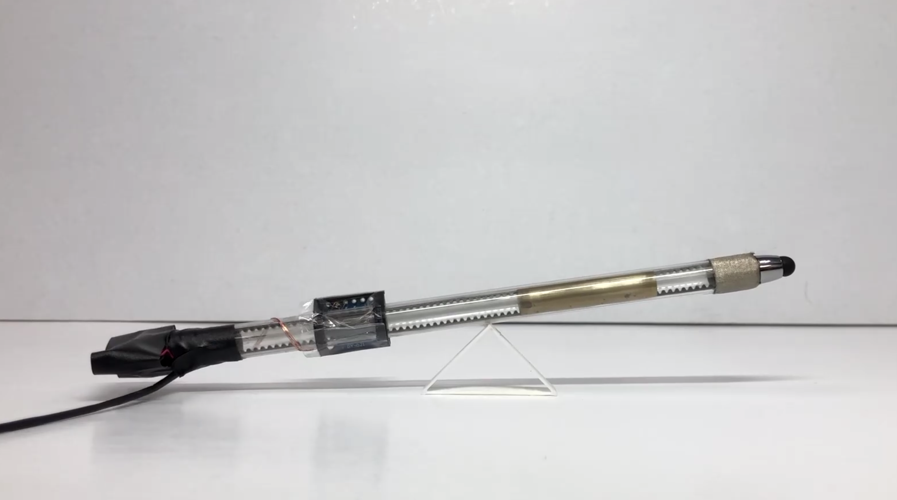

Publication





Course Projects

Final Project in Rending Algorithm
CS187 Rendring Algorithm at Dartmouth College 2019 [project page]

TextBox: Exploring Text-entry on Head-Mounted Displays
CS189 Topics in HCI at Dartmouth College 2019 [PDF]

Using Three-Step-Search to Realize Tracking System on the Pan-Tilt Platform
Undergraduate Thesis - National Cheng Kung University [PDF]